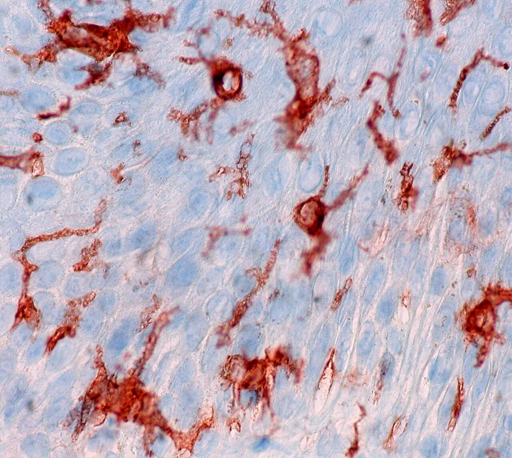

Строение кожи. Первичные и вторичные морфологические элементы. Функции кожи. Принципы диагностики и лечения кожных заболеваний. Пиодермия
Общая характеристика и эмбриогенез кожи
Кожа — самый большой орган человеческого тела. У взрослого она занимает от 1,5 до 2 м², а её масса составляет около 5% веса тела.[1, с. 1] Это не просто внешняя оболочка: перед вами полноценный орган с собственными сосудами, нервами, железами и иммунными клетками. Толщина кожи при этом совсем невелика и в разных местах тела колеблется от 0,5 до 4,0 мм — на веках она тонкая, как бумага, на спине и ладонях заметно плотнее.
Кажется, что кожа — просто упаковка, защитный мешок вокруг тела. На деле она устроена как трёхслойная система, каждый слой которой происходит из разного зародышевого листка и несёт свои задачи. Наружный слой — эпидермис (epidermis, от греч. «над кожей») — формируется из эктодермы. Средний слой — дерма (dermis, собственно кожа) — и глубокий слой — гиподерма (hypodermis, подкожная жировая клетчатка) — происходят из мезодермы. Два разных источника — два разных типа тканей: эпидермис построен из эпителия, дерма и гиподерма — из соединительной ткани и жировых клеток.
Посмотрите на основные параметры кожи в таблице ниже — там собраны числа, которые нужно твёрдо знать, потому что именно они отделяют взрослую кожу от детской.
| Параметр | Взрослый | Ребёнок до 7 лет |
|---|---|---|
| Площадь кожи | 1,5–2 м² | значительно меньше (пропорционально росту) |
| Толщина (эпидермис + дерма) | 0,5–4,0 мм | тоньше; зернистый и блестящий слои не сформированы |
| Толщина дермы | 0,5–4,75 мм | меньше |
| pH кожи | 5,5–6,0 (кислая) | 6,12–6,72 (слабощелочная) |
Разберём, что за этими числами стоит. Площадь взрослой кожи — 1,5–2 м², а вес — около 5% от массы тела: для человека весом 70 кг это примерно 3,5 кг живой ткани.[1, с. 1] Толщина дермы варьирует от 0,5 до 4,75 мм в зависимости от области тела. И взрослый, и ребёнок носят на себе один и тот же орган — но качественно он разный.
Ключевое различие — pH кожи, то есть кислотно-щелочная реакция её поверхности. У взрослого pH составляет 5,5–6,0: реакция кислая. У детей до 7 лет — 6,12–6,72, то есть слабощелочная. Почему это важно? Кислая среда подавляет рост большинства патогенных бактерий: она работает как химический барьер. Слабощелочная среда детской кожи этого барьера лишена, и именно поэтому дети до 7 лет несравнимо восприимчивее к пиодермиям — гнойничковым инфекциям кожи. Тот же механизм объясняет, почему щелочное мыло, временно сдвигая pH, на короткое время снижает защиту даже у взрослых.
Теперь об эмбриогенезе. Формирование кожи начинается уже в первые недели жизни плода.[1, с. 1] В 3–4 недели эпидермис представлен всего одним слоем цилиндрических клеток.[1, с. 1] К 7 месяцам внутриутробного развития у плода уже сформированы все слои кожи.[1, с. 1] Однако слои эпидермиса созревают не одновременно: зернистый и блестящий слои у детей до 7 лет ещё не сформированы.[1, с. 1] Именно блестящий слой обеспечивает кислую реакцию поверхности кожи — и его отсутствие у маленьких детей напрямую связано с тем щелочным pH, о котором говорилось выше.
Среди лимфоцитов, населяющих кожу, Т-лимфоциты составляют 90% и располагаются преимущественно в эпидермисе и верхних слоях дермы.[1, с. 17] Это говорит о том, что иммунная защита кожи сосредоточена именно там, где первым делом появляется любая угроза — у самой поверхности. Кожа — не пассивный барьер, а активный иммунный орган.
Слои эпидермиса: строение и клеточный состав
Эпидермис — многослойный плоский эпителий, и снаружи он выглядит однородным. Но посмотрите на схему ниже: под микроскопом это пять совершенно разных этажей, каждый со своими клетками и своей химией.
На схеме слева направо — слои от глубины к поверхности: stratum basale (базальный), stratum spinosum (шиповатый), stratum granulosum (зернистый), stratum lucidum (блестящий) и stratum corneum (роговой). Среди клеток базального слоя на схеме обозначены melanocyte — меланоцит — и Merkel cell — клетка Меркеля; у границы с дермой виден sensory neuron — чувствительное нервное окончание. В зернистом слое подписаны lamellar granules — пластинчатые гранулы, содержащие липиды. Поверхность, где написано dead cells filled with keratin, — это роговой слой: мёртвые клетки, заполненные кератином. Весь путь от делящейся клетки внизу до безъядерной пластинки вверху — и есть кератинизация, главная работа эпидермиса.
Базальный слой (stratum basale) — однорядный, зародышевый слой призматических цилиндрических клеток, лежащий прямо на базальной мембране.[2, с. 1] Цитоплазма богата рибосомами и митохондриями; ядра непрерывно делятся митозом, давая потомство, которое движется вверх, в следующие слои. Вместе с кератиноцитами здесь живут три специализированных типа клеток. Меланоциты — отростчатые клетки, которые синтезируют пигмент меланин и передают его соседним кератиноцитам: меланин накапливается над ядром и экранирует ДНК от ультрафиолета. Клетки Лангерганса — дендритные клетки иммунной системы, стражи эпидермиса, захватывающие антигены и запускающие иммунный ответ. Клетки Меркеля — чувствительные механорецепторы, связанные с нервными окончаниями дермы.[2, с. 2]
Шиповатый слой (stratum spinosum) состоит из 3–8 рядов клеток.[2, с. 2] Соседние кератиноциты соединены протоплазматическими отростками и десмосомами — специализированными межклеточными контактами, которые буквально сшивают соседей и делают слой механически прочным. Не будь десмосом, клетки рассыпались бы при первом же растяжении кожи. Между клетками циркулирует лимфа: она приносит питательные вещества и уносит продукты обмена — ведь сосудов в эпидермисе нет.[2, с. 2]
Зернистый слой (stratum granulosum) занимает 1–2 ряда.[2, с. 2] Здесь в цитоплазме кератиноцитов появляются зёрна кератогиалина — белкового предшественника рогового вещества. В ядрах резко убывает количество ДНК и РНК: клетка готовится к гибели, принося себя в жертву барьеру. Важная педиатрическая деталь: до 7 лет зернистый слой не формируется — именно поэтому кожа детей раннего возраста проницаемее для ряда веществ.
Блестящий слой (stratum lucidum) — безъядерные кератиноциты, насыщенные элеидином и гликогеном.[2, с. 2] Элеидин — промежуточный продукт превращения кератогиалина в зрелый кератин; именно он придаёт слою на гистологических срезах характерный блеск. Этот слой хорошо выражен на ладонях и подошвах — там, где кожа испытывает наибольшее давление, — и практически отсутствует на коже складок и лица.
Роговой слой (stratum corneum) — конечная точка пути. Здесь уже нет живых клеток: только плотно уложенные безъядерные роговые пластинки, скреплённые между собой взаимопроникающими выростами оболочек и ороговевшими десмосомами.[2, с. 2] Роговой слой — главный барьер кожи: именно он ограничивает потерю воды, блокирует проникновение микробов и токсинов, поглощает механические удары. От высыхания тело спасает именно этот компактный слой в сочетании с водно-липидной мантией на его поверхности.
Три нижних слоя — базальный, шиповатый и зернистый — традиционно объединяют под одним названием: мальпигиев слой. Это живая часть эпидермиса, где идут деление, рост и накопление предшественников кератина. Блестящий и роговой слои лежат выше и представляют собой уже зону «готовой продукции».
Чтобы увидеть, как эти слои выглядят в реальном препарате, взгляните на гистологический срез ниже.
На срезе стенки эпидермальной кисты хорошо различим многослойный плоский эпителий — та же архитектура слоёв, что и в нормальной коже, но развёрнутая в удобную для изучения плоскость. Обратите внимание на чёткую смену клеточного облика от базального слоя к поверхности: клетки уплощаются, ядра исчезают, и у самого просвета кисты видна зона роговых пластинок — плотная, бесструктурная масса кератина. Именно такое содержимое характерно для эпидермальной кисты и отличает её от других полостных образований кожи.
Т-лимфоциты составляют 90% всех лимфоцитов кожи и располагаются в эпидермисе и в верхних слоях дермы — то есть именно там, где идут иммунные процессы с участием клеток Лангерганса. Так иммунная функция эпидермиса оказывается структурно вписана в его архитектуру.
Кератинизация: этапы и молекулярные превращения
Кожа снаружи — это мёртвые чешуйки. Но за этим привычным фактом стоит сложная цепочка превращений, которая начинается в живой клетке и заканчивается прочным роговым панцирем. Этот процесс называют кератинизацией — то есть попросту превращением живых клеток в роговые пластинки, наполненные защитным белком. Понять его удобнее всего, двигаясь вместе с клеткой снизу вверх — от базального слоя к роговому.
Шаг 1. Базальный слой: исходная форма кератина. Здесь живут активно делящиеся призматические клетки, и именно здесь кератинизация делает первый шаг. В цитоплазме базальных кератиноцитов появляются тонофиламенты — тончайшие белковые нити, первая, ещё не зрелая форма кератина. Сами по себе они ещё не дают клетке механической прочности: это лишь заготовки, из которых чуть позже будет собран настоящий структурный белок. Параллельно в цитоплазме работают рибосомы и митохондрии — клетка тратит много энергии, потому что впереди у неё долгий путь наверх.
Шаг 2. Шиповатый слой: сборка α-кератина. Клетка продвигается в шиповатый слой, который состоит из трёх-восьми рядов. Здесь белок тонофиламентов перестраивается молекулярно и превращается в α-кератин — то есть попросту в зрелую, структурно упорядоченную форму кератинового белка с характерной спиральной укладкой цепей. Клетки соединены между собой десмосомами и протоплазматическими отростками, а между ними циркулирует лимфа — она доставляет питательные вещества и уносит продукты обмена.[2, с. 2] Клетка ещё жива, ещё питается, но уже работает как маленький завод по сборке кератина.
Шаг 3. Зернистый слой: появление кератогиалина. В зернистом слое, всего один-два ряда клеток, происходит перелом.[2, с. 2] Количество ДНК и РНК в ядрах резко падает — клетка перестаёт расти и делиться.[2, с. 2] Взамен в цитоплазме появляются хорошо заметные под микроскопом зёрна — кератогиалин, то есть попросту белковые гранулы, которые содержат фибриллы-предшественники зрелого кератина.[2, с. 2] Представьте себе клетку, которая последовательно упаковывает себя изнутри: органеллы угасают, а зёрна кератогиалина заполняют освобождающееся пространство. Именно в этом слое начинается финальная перестройка: кератогиалин эволюционирует в следующую форму белка.[2, с. 2]
Шаг 4. Блестящий и роговой слои: элеидин и зрелый кератин. Кератогиалиновые фибриллы превращаются в элеидин — промежуточное, ещё растворимое соединение, которое накапливается в блестящем слое вместе с гликогеном. Блестящий слой хорошо выражен на ладонях и подошвах, где механическая нагрузка высока, и почти отсутствует на коже лица и в складках. Здесь клетки уже безъядерные: ядро и все органеллы растворились, их место занял элеидин. Финальное превращение — из элеидина образуется зрелый кератин, и клетка становится роговой пластинкой.[2, с. 2] В роговом слое такие пластинки плотно прилегают друг к другу за счёт взаимопроникающих выростов оболочек и ороговевших десмосом.[2, с. 2] Перед нами уже не клетка в биологическом смысле — это чешуйка, почти целиком состоящая из кератина и обеспечивающая коже её защитные свойства.
Образование кератина — сложный секреторный процесс, растянутый через все слои эпидермиса: тонофиламент в базальном слое, α-кератин в шиповатом, кератогиалин в зернистом, элеидин в блестящем и, наконец, роговой кератин в самом верхнем слое. Каждый этап жёстко привязан к своему слою, и нарушение любого звена этой цепочки сразу сказывается на барьерных свойствах кожи.
Базальная мембрана и дерма: строение и слои
Эпидермис не лежит на дерме просто так, как ткань на столе. Между ними — базальная мембрана, тонкая пластина, которую образуют роговидные отростки клеток базального слоя вместе с веществом собственно базального слоя.[2, с. 2] Она решает две задачи сразу: прочно скрепляет эпидермис с дермой и одновременно служит барьером — не пропускает вглубь бактерии, токсины, иммунные комплексы и антигены. При этом питательные вещества через неё проходят: сосудов в эпидермисе нет, и всё необходимое он получает диффузно — из капилляров дермы сквозь мембрану.
За мембраной начинается дерма. Её толщина составляет 0,5–4,75 мм — и это не постоянная величина: на веках дерма тонкая, на спине и ладонях куда массивнее. Дерма состоит из клеточных элементов, волокнистых субстанций и межуточного вещества[2, с. 3] и делится на два слоя, которые хорошо различимы на гистологическом срезе.
Сосочковый слой (stratum papillare) — верхний, ближайший к эпидермису. Он состоит из аморфного бесструктурного вещества и нежноволокнистой соединительной ткани, в которой переплетаются коллагеновые, эластические и аргентофильные волокна.[2, с. 3] Между волокнами располагаются клетки и сосуды. Клеточный состав слоя разнообразен: фибробласты — клетки, которые синтезируют волокна и межклеточное вещество; фиброциты — их зрелые, менее активные потомки; гистиоциты — тканевые макрофаги, способные захватывать и переваривать чужеродные частицы; тучные клетки (блуждающие) — хранилища гистамина и гепарина, ключевые участники воспалительных и аллергических реакций; наконец, меланофаги — пигментные клетки, поглотившие меланин.[2, с. 3] Среди лимфоцитов кожи Т-лимфоциты составляют 90% и сосредоточены именно здесь — в эпидермисе и верхних слоях дермы. В сосочках этого слоя проходят сосуды, питающие и дерму, и эпидермис, а также нервные окончания.[2, с. 3]
Посмотрите на срез слева: хорошо виден центральный хрящ (cartilage на английской подписи) и прилегающая к нему ткань. Слой, примыкающий к поверхности, — это дерма в её исходном, малонасыщенном коллагеном состоянии: волокна редкие, рыхлые, окрашены бледно. Именно так выглядит сосочковый слой до активного синтеза матрикса.
Сетчатый слой (stratum reticulare) — нижний, более толстый, компактный и грубоволокнистый, и он составляет основную часть дермы.[2, с. 3] Его строму образуют мощные пучки коллагеновых волокон, окружённые сетями эластических и аргентофильных волокон.[2, с. 3] Возьмите в руки кусок плотной кожи для переплёта — тот тугой, почти несминаемый материал. Ощущение, которое он даёт, и есть механический смысл сетчатого слоя: именно от структуры этого слоя зависит прочность кожи.[2, с. 3] Клеточных элементов здесь те же виды, что и в сосочковом слое, но значительно меньше.[2, с. 3]
На срезе справа — та же ткань на 14-й день после воздействия, окраска по Массону (Masson trichrome). Коллагеновые волокна выделены синим цветом (dense, well-organised collagen в подписи — то есть плотный, хорошо упорядоченный коллаген). Сравните с предыдущим снимком: там волокна редки и бледны, здесь они собраны в пучки и заполняют поле зрения. Именно такой вид имеет зрелый сетчатый слой — и именно так выглядит под микроскопом то, что делает кожу прочной.
Главное, что следует вынести из этого раздела: базальная мембрана — не просто граница, а активный барьер с диффузной питательной функцией; сосочковый слой обеспечивает трофику и клеточный иммунный надзор; сетчатый слой — механическая основа кожи, и его коллагеновые пучки определяют, насколько она устойчива к разрыву.
Гиподерма, кровеносная и лимфатическая системы кожи
Дерма переходит в нижележащий слой постепенно, без чёткой границы. Этот слой — гиподерма (hypoderma), или подкожно-жировая клетчатка — состоит из соединительной ткани и жировых клеток, объединённых в дольки.[2, с. 4] Именно здесь сосредоточено депо жирорастворимых витаминов A, E, F и K: жировая ткань удерживает их до востребования. Гиподерма выполняет и механическую роль — амортизирует удары и смягчает давление на подлежащие структуры. Наконец, слой жира работает как теплоизолятор: он замедляет отдачу тепла с поверхности тела в окружающую среду, и чем он толще, тем эффективнее эта защита.
Кровеносная система кожи устроена послойно — три артериальные сети, расположенные одна над другой. Представьте разрез кожи от фасции мышц до поверхности: снизу вверх сети идут строго по порядку.
Первая, самая глубокая — фасциальная сеть, широкопетлистая, лежит непосредственно под гиподермой. От неё отходят мелкие ветви, которые делятся и соединяются между собой, формируя вторую сеть — субдермальную (rete subdermale): она проходит на границе гиподермы и сетчатого слоя дермы.[2, с. 4] Из субдермальной сети сосуды поднимаются вверх — прямо и наискось — и на границе сосочкового и сетчатого слоёв дермы образуют третью сеть: поверхностное сосудистое сплетение. От него уже берут начало артериолы, проникающие в каждый сосочек дермы и формирующие там концевые петли.[2, с. 4] Сам эпидермис сосудов не имеет: его клетки получают питательные вещества диффузно через базальную мембрану. Волосяные фолликулы, сальные и потовые железы снабжаются от глубокого — субдермального — сплетения.[2, с. 4] Венозная система повторяет этот путь в обратном направлении: начинается посткапиллярными венулами в сосочковом слое и заканчивается в подкожно-жировой клетчатке.
Особого внимания заслуживают артериовенозные анастомозы — прямые соединения между артериолами и венулами, минующие капиллярное русло. Это клубочковые структуры: в коже их насчитывают 16–66 капилляров на 1 мм² кожи.[2, с. 5] Через них кровь сбрасывается напрямую из артериального звена в венозное — прежде всего тогда, когда нужно быстро изменить теплоотдачу. При холоде анастомозы закрываются, кровь идёт через капилляры медленнее, и кожа теряет меньше тепла. При перегреве — открываются, поток через поверхностную сеть нарастает, и теплоотдача усиливается. Именно этот механизм объясняет, почему покрасневшая в жару кожа ощущается горячей на ощупь: это не воспаление, а терморегуляция.
Лимфатическая система кожи образует два широкопетлистых сплетения.[2, с. 5] Глубокое лежит на границе с фасцией мышц, поверхностное — на уровне сосочков дермы. Оба сплетения снабжены клапанами, которые не дают лимфе течь обратно. У новорождённых эта клапанная система ещё не доработана: лимфа задерживается в петлях, растягивает их и образует скопления, которые называют лимфатическими озёрами.[2, с. 5] Именно поэтому отёки у новорождённых возникают так легко и выглядят иначе, чем у взрослых: за ними стоит не сердечная или почечная причина, а незрелость клапанного аппарата.
Теперь — короткий разбор, показывающий, как сосудистая анатомия работает в клинике. Шаг первый: врач видит на тыле стопы плотный, горячий, резко болезненный отёк с чёткой границей покраснения — признаки глубокого воспаления без поверхностного некроза. Шаг второй: из этой картины следует, что процесс захватил глубокое субдермальное сплетение и, вероятно, регионарные лимфатические пути — поверхностное сплетение при изолированном поражении эпидермиса дало бы иную границу и меньшую глубину инфильтрата. Шаг третий: врач направляет усилия на снятие воспаления в глубоком слое, понимая, что поверхностные антисептики здесь не достигнут цели — нужна системная терапия. Знание слоёв сосудистой системы превращается из анатомии в маршрут лечения.
Иннервация кожи: рецепторные структуры
Кожа устроена как огромный сенсорный экран: она непрерывно считывает сигналы из окружающей среды, из центральной нервной системы и от внутренних органов и немедленно передаёт их дальше.[1, с. 22] Чтобы это работало, в коже сложились два независимых канала связи — центральная иннервация, обеспечивающая осознанные ощущения, и вегетативная иннервация, управляющая сосудами, потовыми и сальными железами без участия воли.[2, с. 5]
Нервные стволы входят в кожу снизу и поднимаются ярусами. В гиподерме лежит основное нервное сплетение, в нижней части сосочкового слоя — поверхностное. Оттуда тончайшие волокна расходятся к рецепторам, каждый из которых «настроен» на строго определённый вид раздражения.[2, с. 5]
Посмотрите на таблицу — в ней пять типов рецепторов кожи собраны по модальности и месту залегания. Разберём каждый по очереди, потому что их расположение — не случайность, а принцип: чем быстрее нужна реакция, тем ближе рецептор к поверхности.
| Рецептор | Модальность | Локализация |
|---|---|---|
| Тельца Мейснера | Боль, зуд, жжение | Базальный слой эпидермиса |
| Клетки Меркеля | Тактильная чувствительность (осязание, давление) | Базальный слой эпидермиса |
| Колба Краузе | Холод | Эпидермис |
| Тельца Руффини | Тепло | Граница дермы и гиподермы |
| Тельца Фатера-Пачини | Давление, положение тела в пространстве | Гиподерма |
Ближе всего к поверхности — рецепторы базального слоя эпидермиса. Здесь соседствуют два разных по функции образования. Тельца Мейснера — инкапсулированные чувствительные окончания, воспринимающие боль, зуд и жжение; их поверхностное расположение объясняет, почему даже лёгкое химическое раздражение кожи немедленно даёт ощущение жжения.[2, с. 5] Рядом с ними в базальном слое находятся клетки Меркеля — они отвечают за тактильную чувствительность: ощущение плотности, мягкости и консистенции предметов; именно поэтому тактильное восприятие наиболее тонко на концевых фалангах пальцев и в крупных складках, где концентрация этих клеток особенно высока.[1, с. 22]
Чуть глубже, в самом эпидермисе, залегают колбы Краузе — рецепторы холода. Их название отражает форму: округлое, колбообразное инкапсулированное тельце с разветвлёнными внутри нервными волокнами. На границе дермы и гиподермы, значительно глубже, расположены тельца Руффини — они воспринимают тепло.[2, с. 5] Такое соотношение глубин — холодовые рецепторы ближе к поверхности, тепловые глубже — соответствует тому, что холод кожа «чувствует» быстрее тепла: меньше расстояние, меньше задержка сигнала.
Самые глубокие из перечисленных рецепторов — тельца Фатера-Пачини, крупные инкапсулированные образования в гиподерме. Они воспринимают давление и информацию о положении тела в пространстве. Здесь уместно сравнить числа: тельца Мейснера лежат в долях миллиметра от поверхности, тельца Фатера-Пачини — в нескольких миллиметрах, и дерма, через которую проходит этот путь, имеет толщину от 0,5 до 4,75 мм — разброс почти десятикратный в зависимости от участка тела.[2, с. 5] Именно поэтому на тонкой коже век и на толстой коже спины одно и то же давление ощущается совершенно по-разному: глубина залегания рецептора меняется вместе с толщиной дермы, и порог восприятия смещается.
Отдельного внимания заслуживает регуляция потоотделения. Потовые железы получают вегетативную иннервацию, однако сам потовой центр — нервный центр, управляющий работой потовых желёз, — находится не в коже и не в спинном мозге, а в клетках стенки третьего желудочка межуточного мозга. Это важно клинически: при поражениях гипоталамической области нарушается не только терморегуляция в целом, но и локальное потоотделение — симптом, который на первый взгляд кажется периферическим, а на деле указывает на центральный уровень поражения.
Итог раздела таков: каждый вид кожной чувствительности обеспечивается своим рецептором на строго определённой глубине, и нарушение именно одной модальности при сохранных остальных позволяет предположить, какой рецепторный тип пострадал.
Придатки кожи: сальные и потовые железы
Кажется, что пот и кожное сало — это просто «выделения», побочный продукт, от которого кожа избавляется. На деле сальные и потовые железы — это два принципиально разных по устройству механизма, каждый со своей биологической задачей, своим сроком запуска и своей зоной ответственности.
Сальные железы (glandulae sebaceae) закладываются уже на 2–3-й неделе внутриутробного развития и к моменту рождения успевают поработать: именно их секрет составляет ту самую жировую смазку, которой покрыт новорождённый.[2, с. 6] Железы устроены как сложные альвеолярные образования и используют голокриновый тип секреции — способ, при котором секрет образуется путём полного разрушения секретирующей клетки. Клетка, накопив жир, буквально погибает сама и целиком становится продуктом выделения. Так появляется кожное сало — смесь жирных кислот, эфиров холестерина, глицерина, алифатических алкоголей, углеводородов и азотистых соединений.[2, с. 21]
Большинство сальных желёз открываются не прямо на поверхность кожи, а в волосяной фолликул — трубчатое углубление эпидермиса, в котором сидит корень волоса. Такое соседство не случайно: сало смазывает стержень волоса и выходит на поверхность вместе с ним. Лишь на некоторых участках — половых органах и части лица — крупные сальные железы открываются непосредственно на кожу, минуя фолликул.[2, с. 6] Смешиваясь с потом, кожное сало образует водно-липидную мантию, которая обладает бактерицидной и фунгистатической активностью.[2, с. 21]
С потовыми железами всё иначе. Их два вида, и они устроены по-разному — посмотрите на Таблицу 1, где оба типа сведены рядом: различия сразу становятся очевидны.
| Признак | Экринные железы | Апокринные железы |
|---|---|---|
| Тип секреции | Мерокриновый (клетка сохраняется) | Апокриновый (отделяется верхушка клетки) |
| Связь с фолликулом | Открываются самостоятельно на поверхность кожи | Открываются в сально-волосяной фолликул |
| Распределение | Повсеместно, кроме головки полового члена, малых половых губ и внутреннего листка крайней плоти | Подмышечные впадины, гениталии, ареола соска |
| Плотность | От 200 до 800 на 1 кв. см | Ограниченные зоны |
| Возраст активности | Формируются на 2-м месяце внутриутробного развития, полноценно работают с периода полового созревания | Начинают функционировать в период полового созревания, активны до 60–65 лет |
Экринные потовые железы (glandulae sudoriferae eccrinae) используют мерокриновый тип секреции — при нём секретирующие клетки не гибнут: секрет выделяется за счёт активности самих клеток с участием процессов диффузии и осмоса, и железа продолжает работать.[2, с. 6] Именно эти железы распределены практически по всей коже — плотность от 200 до 800 на 1 кв. см.[2, с. 6] Исключение составляют три зоны: головка полового члена, малые половые губы и внутренний листок крайней плоти — там экринных желёз нет вовсе.[2, с. 7] Формируются они уже на 2-м месяце внутриутробного развития, но к рождению ещё не функционируют: первые два года жизни потоотделение постепенно нарастает, а его «взрослый» характер устанавливается только в период полового созревания.[2, с. 6] До этого момента преобладает незаметное, так называемое перспирационное потоотделение.
Апокринные потовые железы (glandulae sudoriferae apocrinae) сосредоточены там, где есть крупные волосяные фолликулы: подмышечные впадины, гениталии, ареола соска. Как и сальные железы, они открываются именно в фолликул, а не прямо на поверхность.[2, с. 7] Возрастные рамки их работы чёткие: начинают функционировать в период полового созревания и остаются активными вплоть до снижения уровня половых гормонов — примерно до 60–65 лет.[2, с. 7] До пубертата и после этого возраста апокринные железы молчат. Как видите в таблице, именно эти два признака — связь с фолликулом и жёсткая зависимость от гормонального фона — принципиально отличают апокринные железы от экринных.
Наконец, молочные железы — тоже производные кожных желёз, модифицированные апокринные структуры. Это не самостоятельный орган в эволюционном смысле, а специализированная кожная железа, которая у женщин достигает полного развития. Кожное сало, экринный пот и молоко — три продукта, за которыми стоит один эволюционный источник.
Главное, что следует вынести из этого раздела: тип секреции — голокриновый у сальных желёз, мерокриновый у экринных — определяет не только биохимию продукта, но и то, как железа реагирует на воспаление. Когда при пиодермии процесс захватывает сально-фолликулярный аппарат, он встречает железу, клетки которой и без того запрограммированы на гибель. Это объясняет, почему фолликулярные нагноения развиваются так стремительно.
Придатки кожи: волосы и ногти
Волосы формируются уже на 2–3-м месяце эмбрионального развития — задолго до того, как большинство органов принимают окончательный вид.[2, с. 7] У взрослого человека различают четыре типа волос: длинные, щетинистые, пушковые (vellus) и эмбриональные (lanugo).[2, с. 7] Каждый волос устроен из двух частей: корня, скрытого в глубине кожи, и стержня, выступающего над её поверхностью.
Стержень волоса трёхслоен. Центр занимает мозговое вещество — рыхлая сердцевина; вокруг него — плотное корковое вещество, придающее волосу прочность; снаружи — кутикула, один слой уплощённых клеток, которые накладываются друг на друга, как черепица. Корень охвачен волосяным фолликулом — трубчатым карманом из эпидермиса и соединительной ткани. Его наружная стенка образована клетками базального и шиповатого слоёв, внутренняя состоит из трёх слоёв: кутикулы, слоя Гексли и слоя Генле. В основании фолликула лежит волосяная луковица с сосочком — именно сюда входят капилляры и нервные волокна. К стенке фолликула прикреплена мышца, поднимающая волос (m. arrector pili): при холоде или страхе она сокращается, волос «встаёт», а на коже появляется «гусиная кожа».
Посмотрите на продольный срез фолликула выше. На схеме буквами обозначены: M — мозговое вещество стержня, Co — корковое вещество, SM — поверхностная мышца (m. arrector pili), HP — волосяной сосочек, Ap — апокринная железа, WS и WS¹ — наружное и внутреннее корневые влагалища, GH — луковица, F и F¹ — слои фолликулярного эпителия, R — матрикс луковицы, O — зачаток. Обратите внимание: луковица охватывает сосочек снизу, и именно здесь происходит активное деление клеток, из которых вырастает весь стержень.
Цвет волоса определяется меланином, который синтезируют ДОФА-положительные меланоциты — клетки, способные окислять диоксифенилаланин (ДОФА) до пигмента. Не будь этих меланоцитов в луковице, кожа была бы лишена защиты от ультрафиолета на участках, закрытых волосом.
Рост волоса цикличен и включает три фазы. Анаген — фаза активного роста, длится от 2 до 5–7 лет: клетки луковицы непрерывно делятся, стержень удлиняется. Затем наступает катаген — переходная фаза инволюции фолликула, продолжается 1–3 недели: деление прекращается, луковица сморщивается. Завершает цикл телоген — фаза покоя длительностью около 3 месяцев, после которой старый волос выталкивается новым. В норме одновременно около 85–90% волос головы находятся в анагене, остальные — в катагене и телогене; именно поэтому ежедневное выпадение 50–100 волос считается физиологическим.
Ноготь — это роговая пластина, покрывающая тыльную поверхность концевой фаланги. Её источник — матрикс ногтя (matrix unguis), ростковая зона, скрытая под задним ногтевым валиком. Матрикс формирует пластину послойно: клетки делятся, кератинизируются и уплощаются, продвигаясь к свободному краю. Ногтевая пластина продолжает скользить по ногтевому ложу — слое эпидермиса с богатой капиллярной сетью, которая и придаёт ногтю розовый цвет. Снизу ноготь отделяет от фаланги гипонихий, сверху прикрыт кутикулой (eponychium). Полное обновление ногтя на пальцах рук занимает около 6 месяцев, на пальцах ног — до 12–18 месяцев.
На продольном гистологическом срезе выше хорошо видно, как устроены все слои. Nail — сама пластина, Eponychium — кутикула, прикрывающая основание; Stratum corneum — роговой слой ногтевого желобка (nail groove), Stratum granulosum — зернистый слой под ним, Stratum mucosum — ростковый слой эпидермиса ложа, Corium — дерма, Blood-vessel — капилляр ложа. Обратите внимание на то, что матрикс (зона деления) находится проксимальнее кутикулы — на схеме это левый конец пластины: именно здесь любое повреждение ведёт к стойкому дефекту роста.
Патологические изменения ногтевой пластины имеют строгие названия. Онихолизис (onycholysis) — отслойка пластины от ложа, начинающаяся со свободного края; характерен для псориаза, микозов, травм. Онихоуксис (onychauxis) — равномерное утолщение пластины без изменения структуры; встречается при хронических дерматозах и системных заболеваниях. Онихорексус (onychorrhexis) — продольное растрескивание ногтя с образованием борозд, идущих от матрикса к свободному краю; нередко указывает на нарушение периферического кровотока. Трахионихия (trachyonychia) — шероховатость поверхности пластины, которая теряет блеск и становится похожей на наждачную бумагу; типична для гнёздной алопеции и очагового псориаза ногтей.
Волосы и ногти — не украшение, а функциональные придатки кожи, нарушение которых часто оказывается первым видимым признаком системного заболевания: эндокринопатии, анемии, грибковой инфекции или аутоиммунного процесса. Умение читать изменения ногтевой пластины и волосяного покрова — часть обязательного дерматологического осмотра.
Красная кайма губ и слизистая полости рта
Полость рта закладывается у 7–8-недельного плода: из эктодермы образуются собственно полость рта и язык, тогда как слизистая глотки и гортани — уже мезодермального происхождения.[1, с. 1] Граница между ними не резкая: слизистая рта постепенно переходит в многослойный плоский эпителий красной каймы губ, а та — в обычную кожу лица.
Слизистая полости рта — то есть попросту внутренняя выстилка щёк, нёба и дна рта — устроена иначе, чем кожа. Эпителий здесь имеет лишь два слоя: базальный и шиповатый.[2, с. 9] Роговой, блестящий и зернистый слои, которые составляют защитный «панцирь» кожи, здесь отсутствуют. Вместо рогового слоя функцию барьера во многом берёт на себя гликоген, накапливающийся прямо в клетках эпителия; его запасы используются и в местном энергетическом обмене.[2, с. 9] В том же эпителиальном пласте находятся клетки Лангерганса и меланоциты. Под эпителием — собственно слизистый слой из коллагеновых, преколлагеновых и эластических волокон с вкраплёнными в них мелкими слюнными железами, а глубже — подслизистая основа.[2, с. 9] Защиту изнутри обеспечивает не роговой слой, а лизоцим слюны: он подавляет рост многих возбудителей инфекций.
Красная кайма губ — переходная зона — делится на две части, и их различия принципиальны. Наружная зона ещё сохраняет видоизменённые клетки рогового слоя, однако полного ороговения здесь нет. Поверхностный слой пропитан элеидином — промежуточным продуктом ороговения, который и придаёт губам характерный блеск.[2, с. 9] Сальные железы в этой зоне сохраняются только в углах рта. Внутренняя зона носит имя зоны Клейна — это узкая полоса слизистой прямо у края зубов, где наружный слой эпителия всё ещё содержит ядра, а дермальные сосочки очень удлинены.[2, с. 9] Сравните эти две зоны мысленно: наружная зона тяготеет к коже — неполное ороговение, элеидин; внутренняя зона тяготеет к слизистой — ядра в поверхностных клетках, высокие сосочки. Между ними нет чёткого рубежа, переход постепенный.
Нервный аппарат губ и полости рта образован тремя чувствительными нервами: тройничным, языкоглоточным и лицевым.[2, с. 9] Двигательное обеспечение языка — отдельная история: подъязычный нерв, то есть попросту нерв, управляющий мышцами языка, является исключительно двигательным и иннервирует язык как орган движения.[2, с. 9] Именно поэтому его поражение сразу сказывается на артикуляции и глотании, тогда как чувствительность языка при этом может оставаться сохранной.
Итог: слизистая полости рта — двухслойный эпителий без ороговения, с гликогеном вместо рогового щита; красная кайма — переходная зона с двумя участками, наружным (элеидин, неполное ороговение) и зоной Клейна (ядра в поверхностном слое); чувствительность обеспечивают тройничный, языкоглоточный и лицевой нервы, движения языка — подъязычный нерв.
Функции кожи: обзор и механизмы
Кожа — не просто оболочка, отделяющая организм от внешней среды. Она работает одновременно как барьер, радиатор, склад, сенсор и лаборатория. Разберём каждую из этих ролей по порядку, а потом сведём всё вместе в таблицу — чтобы было куда смотреть, когда нужно быстро вспомнить, какая структура за что отвечает.
Защитная функция — главная, и обеспечивают её сразу несколько механизмов, каждый против своей угрозы. Против механических повреждений работают плотный роговой слой, прочные коллагеновые и эластические волокна дермы и упругая подкожная жировая клетчатка. Против высыхания — тот же роговой слой и водно-липидная мантия (тонкая плёнка, которую образуют кожное сало и пот, смешиваясь на поверхности кожи; она удерживает влагу и одновременно создаёт первый химический барьер). Представьте полиэтиленовую плёнку, которой прикрывают тесто, чтобы оно не заветрело: водно-липидная мантия работает примерно так же — только она живая, кислая по реакции и бактерицидная. Именно кислая реакция этой плёнки подавляет рост большинства патогенных бактерий и тормозит всасывание чужеродных веществ.[2, с. 21] Против ультрафиолетового и радиоактивного излучения работает меланин: меланоциты синтезируют его и передают в базальные кератиноциты, где пигмент располагается над ядром, образуя защитный экран.[1, с. 18]
Терморегуляторная функция реализуется тремя путями: испарением пота с поверхности кожи, инфракрасным излучением и теплопроведением при контакте с более холодным или более тёплым предметом.[2, с. 22] Ключевую роль играет изменение кожного кровотока: при высокой температуре сосуды расширяются и объём протекающей крови возрастает — теплоотдача усиливается; при низкой — сосуды суживаются, теплоотдача падает.[2, с. 22]
Секреторная функция — это работа сальных желёз, потовых желёз и кератиноцитов. Сальные железы вырабатывают кожное сало из жирных кислот и эфиров холестерина; помимо участия в образовании водно-липидной мантии, они выводят с кожным салом токсины и некоторые лекарственные вещества — это уже экскреторная составляющая той же функции.[2, с. 21]
Дыхательная функция скромна, но реальна: кожа поглощает 1/180 часть кислорода и выделяет 1/90 часть углекислого газа от общего газообмена лёгких. Иными словами, через кожу уходит вдвое больше CO₂, чем поступает O₂ — соотношение, которое легко запутать, если не запомнить именно эти дроби.
Кожа как депо крови. Разветвлённая сосудистая сеть дермы способна вмещать значительный объём крови, перераспределяя её между периферией и внутренними органами в зависимости от потребностей организма.
Рецепторная функция делает кожу мультифакторным анализатором.[1, с. 22] Тактильная чувствительность — осязание и давление — наиболее остро воспринимается на концевых фалангах пальцев. Болевая чувствительность связывает кожное рецепторное поле с центральной и вегетативной нервными системами через дермонейротропные и дермовисцеральные связи. Температурная чувствительность разделена между двумя типами рецепторов: тельца Руффини воспринимают тепло, колбы Краузе — холод.[1, с. 22]
Функция резорбции — способность кожи всасывать вещества, нанесённые на её поверхность — прямо противоположна барьерной, и обе существуют одновременно. Именно на резорбции основана наружная терапия в дерматологии: мазь, нанесённая на кожу, не просто лежит на поверхности, а частично проникает в глубжележащие слои и оказывает местное, а иногда и системное действие.
Диэлектрическая функция — свойство кожи оказывать сопротивление электрическому току. Роговой слой с его кератинизированными клетками ведёт себя как изолятор: он резко снижает электропроводность, защищая внутренние органы от воздействия слабых электрических токов.
Обменная функция включает несколько процессов. В базальном слое синтезируются основные белки кожи — кератин, эластин, коллаген. Под действием ультрафиолета в коже образуется витамин D. Кроме того, кожа служит депо жирорастворимых витаминов, холестерина, углеводов, йода, аминокислот и жёлчных кислот — всё это накапливается без нарушения физиологического состояния ткани.
Посмотрите на таблицу ниже — она сводит все функции в одну строку: название, механизм, структура-исполнитель. Как видите в таблице, у некоторых функций один исполнитель, у других — сразу несколько структур работают вместе. Это важно: провал одного звена не всегда означает полную потерю функции.
| Функция | Механизм | Структура-исполнитель |
|---|---|---|
| Защитная | Механический барьер; водно-липидная мантия с кислой реакцией подавляет патогены; меланин поглощает УФ-излучение | Роговой слой; потовые и сальные железы; меланоциты базального слоя |
| Терморегуляторная | Испарение пота, инфракрасное излучение, теплопроведение; изменение кровотока кожи | Потовые железы; кровеносные сосуды дермы |
| Секреторная | Выработка кожного сала и пота; выведение токсинов и лекарств | Сальные и потовые железы; кератиноциты |
| Дыхательная | Газообмен через поверхность кожи: поглощение 1/180 O₂, выделение 1/90 CO₂ от газообмена лёгких | Поверхность эпидермиса |
| Депо крови | Аккумуляция и перераспределение крови | Кровеносные сосуды дермы и гиподермы |
| Рецепторная | Тактильная, болевая, температурная чувствительность через специализированные рецепторы | Тельца Руффини (тепло), колбы Краузе (холод), свободные нервные окончания (боль) |
| Резорбция | Всасывание веществ через кожу — основа наружной терапии | Эпидермис, волосяные фолликулы, потовые железы |
| Диэлектрическая | Электрическое сопротивление рогового слоя защищает от тока | Роговой слой эпидермиса |
| Обменная | Синтез витамина D под действием УФ; депонирование холестерина, витаминов, аминокислот; синтез кератина, коллагена, эластина | Базальный слой (синтез белков); подкожная жировая клетчатка (депо) |
Обратите внимание: роговой слой и водно-липидная мантия встречаются сразу в нескольких строках — защитной и диэлектрической. Это не случайность. Роговой слой — универсальный исполнитель: он одновременно механический щит, барьер для тока и первая линия противомикробной защиты. Именно поэтому нарушение кератинизации при любом воспалительном дерматозе так быстро сказывается сразу на нескольких функциях кожи — они теряются не по одной, а пучком.
Иммунная функция кожи
Кожа — не просто барьер. Это полноценный иммунный орган, в котором работают собственные клетки надзора, распознавания и ответа, распределённые по слоям неслучайно.[1, с. 17]

Т-лимфоциты кожи — основа её иммунной системы: они составляют 90% всех лимфоцитов кожи и располагаются в эпидермисе и в верхних слоях дермы.[2, с. 20] Там, где угроза появляется первой, — там и главный дозор. В-лимфоциты кожи, напротив, обнаруживаются в средних и глубоких слоях дермы: они работают на второй линии, там, куда антиген проникает уже после того, как преодолел поверхность.[1, с. 17]
Рядом с Т-лимфоцитами в дерме, вокруг посткапиллярных венул поверхностного сосудистого сплетения, сосредоточены периваскулярные лимфоциты. Они устроены симметрично: хелперов и супрессоров поровну — хелперно-супрессорный индекс равен 0,93–0,96. Это баланс: система не перегрета и не подавлена.
Кератиноциты — клетки, которые принято считать просто строительным материалом рогового слоя, — на самом деле ведут себя как участники иммунного ответа. Они сходны по своим свойствам с эпителиальными клетками вилочковой железы и продуцируют неспецифические медиаторы и биологически активные факторы, участвующие в иммунологических и воспалительных реакциях кожи.[2, с. 20] Кератиноцит — это и кирпич стены, и сигнальная ракета одновременно.
В дерме и подкожной клетчатке действует ещё одна система — макрофагальная система, совокупность клеток, способных поглощать, перерабатывать и представлять антигены. Она включает фибробласты, фагоцитирующие макрофаги — гистиоциты, дендритические клетки и тучные клетки.
Дендритические клетки — это разветвлённые отростчатые клетки, чьи длинные «руки» позволяют захватывать антигены на большой площади и передавать их Т-лимфоцитам. Посмотрите на снимок ниже: именно так они выглядят в живом эпидермисе.
На иммуногистохимическом препарате видны клетки Лангерганса — главные дендритические клетки эпидермиса — окрашенные антителами к маркеру CD1a. Тёмные тела с длинными отростками, расходящимися в стороны, — это они. Обратите внимание: отростки тянутся между соседними кератиноцитами, образуя сеть надзора прямо внутри эпидермиса. Там, где маркер CD1a виден ярко и отростки хорошо различимы, — иммунный надзор работает нормально. При многих воспалительных и онкологических заболеваниях кожи плотность и морфология этих клеток меняются, и это видно уже на таком срезе.
Распределение иммунных клеток по слоям — не случайная картина: Т-лимфоциты стоят там, где антиген проникает первым, В-лимфоциты — там, куда он добирается позже, а макрофагальная система охватывает всю толщу дермы и гиподерму. Теперь разберём, как эта система работает в реальной ситуации.
Шаг первый — врач видит на коже пациента очаг покраснения с чёткими краями, незначительным шелушением и отёком, без гноя и некроза. Шаг второй — картина указывает на острую воспалительную реакцию в эпидермисе и верхних слоях дермы: именно там концентрированы Т-лимфоциты и клетки Лангерганса, которые первыми отвечают на контактный аллерген или инфекцию. Кератиноциты уже выбросили медиаторы — отсюда отёк и покраснение. Шаг третий — врач назначает биопсию с иммуногистохимией, чтобы уточнить состав инфильтрата: преобладание Т-лимфоцитов укажет на аллергический или инфекционный процесс, а аномальная плотность или форма дендритических клеток — на лимфому кожи.
Иммунная система кожи — это не один тип клеток, а слоистая конструкция: Т-лимфоциты на переднем крае, В-лимфоциты в глубине, кератиноциты как сигнальщики и макрофагальная система как армия второй линии. В реализации иммунных процессов кожи участвуют и клетки крови, мигрирующие в очаг через стенку посткапиллярных венул.[2, с. 20]
Первичные морфологические элементы: бесполостные
Кожа меняет свой вид при болезни — и эти изменения не случайны. Каждое из них имеет название, глубину залегания и предсказуемый исход. Именно поэтому морфологический элемент — не просто описание того, что видно глазом, а диагностический аргумент. Начнём с бесполостных элементов: в отличие от пузырьков и пустул, они не содержат полости с жидкостью, а представляют собой инфильтрат — скопление клеток в ткани.
Самый простой из бесполостных элементов — пятно (macula) — изменение окраски кожи без изменения её рельефа и консистенции. Кожа остаётся такой же гладкой на ощупь, не возвышается и не западает. Именно это отличает пятно от всех прочих элементов: там, где есть уплотнение или бугорок, пятно уже закончилось.
Пятна делят на три большие группы. Сосудистые пятна возникают из-за расширения сосудов сосочкового слоя дермы.[2, с. 10] Среди них различают гиперемические — при временном расширении сосудов, исчезающие при диаскопии (надавливании стеклом), — и телеангиоэктазии, то есть паралитическое стойкое расширение сосудов, которое при надавливании не исчезает. Третья разновидность — геморрагические пятна: кровь выходит из сосудистого русла вследствие разрыва сосудов или повышения их проницаемости и пропитывает ткань. Именно поэтому геморрагические пятна не бледнеют при диаскопии — давить можно сколько угодно, кровь из ткани никуда не уйдёт.
Геморрагические пятна классифицируют по размеру — и здесь приём «порядок величин» особенно нагляден. Петехии — самые мелкие, до 1 см. Пурпура — уже 1–2 см, то есть в среднем вдвое крупнее петехий. Экхимозы начинаются от 2 см и могут быть во много раз больше. Разница между петехией и экхимозом — это не просто разница в сантиметрах: за ней стоит объём кровоизлияния, а значит, и тяжесть нарушения. Петехия — точечная, экхимоз может занимать всю поверхность бедра. Помимо этих трёх, выделяют ещё вибицес — геморрагические пятна с характерным линейным расположением, и суггилляцию (suggillatio) — обширное кровоизлияние в ткань, по сути, крупнейший вариант экхимоза.[2, с. 11]
Пигментные пятна возникают из-за изменения содержания меланина в коже: говорят о гиперпигментации, когда меланина больше нормы, и гипопигментации — когда его меньше.[2, с. 11] Наконец, искусственные пятна — это татуировка и татуаж, то есть введённый извне краситель.[2, с. 11]
Теперь посмотрите на таблицу ниже — она собирает все бесполостные элементы вместе и позволяет сразу увидеть, что именно определяет исход: глубина залегания.
| Элемент | Вид | Глубина залегания | Исход |
|---|---|---|---|
| Пятно (macula) | Изменение окраски без изменения рельефа и консистенции | Сосочковый слой дермы (сосудистые); эпидермис (пигментные) | Бесследное исчезновение |
| Узелок (papula) | Бесполостной инфильтративный элемент, слегка возвышающийся над кожей | Эпидермис и верхние слои дермы | Разрешается без рубца и рубцовой атрофии |
| Узел (nodus) | Ограниченное образование разной плотности, от горошины до куриного яйца | Подкожная жировая клетчатка или подслизистый слой | Язва или рубец |
| Бугорок (tuberculum) | Очаг продуктивного воспаления типа инфекционной гранулёмы | Сетчатый слой дермы | Всегда рубец |
Как видите в таблице, четыре элемента выстраиваются в чёткую иерархию по глубине — и исход нарастает вместе с ней. Разберём каждый подробнее.
Узелок (papula) — бесполостной, инфильтративный элемент, слегка возвышающийся над уровнем кожи. «Инфильтративный» здесь ключевое слово: полости нет, есть скопление клеток. Главное практическое свойство узелка — при разрешении он не оставляет ни рубца, ни рубцовой атрофии. Это важно: пациент, у которого высыпали узелки, может рассчитывать на полное восстановление кожи.
Узел (nodus) — уже совсем другая история. Это ограниченное образование разной плотности, размером от горошины до куриного яйца, возникающее в подкожной жировой клетчатке или подслизистом слое слизистой оболочки.[2, с. 11] Он залегает значительно глубже узелка — и расплачивается за это исходом: при разрешении узел оставляет язву или рубец. Коротко: узелок — эпидермис и верхняя дерма, узел — подкожная клетчатка; узелок уходит бесследно, узел — никогда.
Бугорок (tuberculum) развивается в сетчатом слое дермы и представляет собой очаг продуктивного воспаления типа инфекционной гранулёмы.[2, с. 12] Регрессируя, он всегда оставляет рубец — без исключений.[2, с. 12] Именно это свойство делает бугорок маркером таких болезней, как туберкулёз кожи или лепра: если после высыпания остался рубец, это уже не узелок.
Итог, который стоит запомнить: исход бесполостного элемента определяется глубиной залегания. Пятно не меняет рельефа и исчезает бесследно. Узелок поверхностен — рубца нет. Узел уходит в клетчатку — остаётся язва или рубец. Бугорок как гранулёма в сетчатом слое дермы — рубец неизбежен.
Первичные морфологические элементы: полостные
Кажется, что пузырь на коже — это просто волдырь с жидкостью, и все они устроены одинаково. На деле полостные элементы различаются и по размеру, и по глубине залегания, и по механизму образования, и — что важнее всего для прогноза — по тому, что останется после их исчезновения.
Начнём с самого маленького. Пузырёк (vesicula) — небольшое полостное образование полушаровидной формы, содержащее жидкость; его принципиальная черта — размер до 5 мм.[2, с. 12] Всё, что крупнее, уже другой элемент. У пузырька, как и у пузыря, есть покрышка — тонкий слой эпидермиса сверху — и дно, которое подстилает полость снизу. Содержимое бывает серозным, гнойным или геморрагическим.[2, с. 12]
Пузырь (bulla) устроен так же: покрышка, дно, жидкое содержимое внутри — но превышает 5 мм и формируется иначе.[2, с. 12] Пузырёк и пузырь образуются тремя путями. При баллонирующей дегенерации клетки эпидермиса набухают, теряют связи друг с другом и превращаются в округлые «баллоны» — между ними и скапливается жидкость. При вакуольной дегенерации внутри кератиноцитов появляются вакуоли, клетки гибнут, и на их месте остаётся полость. Наконец, спонгиоз — это межклеточный отёк: жидкость проникает в пространство между клетками шиповатого слоя и растягивает их связи до разрыва, образуя многокамерную полость. Все три механизма — в эпидермисе, поэтому рубца после пузырей и пузырьков, как правило, не остаётся.
Пустула (pustula), или гнойничок, — полостной элемент с гнойным содержимым, выступающий над окружающей кожей; контур у него чёткий, по периферии — воспалительный венчик.[2, с. 12] Здесь принципиально важна глубина. Эпидермальная пустула расположена поверхностно: вскрываясь, она оставляет лишь временную депигментацию, и кожа восстанавливается полностью. Дермальная пустула уходит глубже — в дерму — и после разрешения неизбежно оставляет рубец.[2, с. 12] Это различие стоит держать в голове при осмотре: одна и та же картина гнойничка может означать принципиально разный прогноз для кожного рельефа.
Отдельного слова заслуживает фликтена — разновидность пустулы с дряблой, ненапряжённой покрышкой. Если обычный гнойничок упруг и куполообразен, то фликтена выглядит как вялый, словно сдувшийся пузырь: покрышка провисает, содержимое мутное, края размыты. Именно такую картину дают поверхностные стрептококковые поражения кожи.
Посмотрите на таблицу ниже — там все четыре элемента сведены вместе, и различия между ними видны сразу.
| Элемент | Размер | Содержимое | Механизм / глубина | Исход |
|---|---|---|---|---|
| Пузырёк (vesicula) | до 5 мм | серозное, геморрагическое | спонгиоз, баллонирующая или вакуольная дегенерация; эпидермис | без рубца |
| Пузырь (bulla) | более 5 мм | серозное, гнойное, геморрагическое | те же три механизма; эпидермис | без рубца |
| Пустула эпидермальная (pustula) | варьирует | гнойное | эпидермис | временная депигментация, без рубца |
| Пустула дермальная | варьирует | гнойное | дерма | рубец |
| Фликтена | варьирует | мутное, гнойное | поверхностная пустула с дряблой покрышкой | без рубца |
Как видите в таблице, пузырёк и пузырь различаются одной чертой — размером в 5 мм — но не исходом: оба проходят бесследно, потому что залегают в эпидермисе. Содержимое у пузыря может быть трёх видов: серозное, гнойное или геморрагическое — в зависимости от того, какой процесс его породил. Пустулы внешне похожи, однако их судьба определяется глубиной: эпидермальная оставит лишь временное пятно депигментации, дермальная — стойкий рубец. Фликтена занимает особое место в этом ряду: это та же пустула, только покрышка у неё дряблая и ненапряжённая, что сразу бросается в глаза при осмотре.
Главный практический вывод раздела: глубина определяет исход. Поверхностный полостной элемент — в эпидермисе — заживает без следа; как только процесс уходит в дерму, остаётся рубец. Поэтому при осмотре пустулы важно не только описать её содержимое, но и оценить, насколько глубоко она сидит.
Вторичные морфологические элементы и принципы диагностики кожных заболеваний
Первичные элементы — пятно, папула, пузырёк — возникают на неизменённой коже. Вторичные появляются позже: они либо развиваются из первичных, либо возникают на их месте после разрешения. Понять вторичный элемент — значит прочитать историю болезни назад, от следа к причине.
Посмотрите на таблицу ниже — она сводит восемь вторичных элементов в три столбца: название, как это выглядит и при каком заболевании встречается чаще всего. Но таблицы пропускают, поэтому разберём каждую строку словами.
| Элемент | Морфология | Пример заболевания |
|---|---|---|
| Чешуйки (squama) | Отторгающиеся пласты рогового слоя; муковидные, отрубевидные или пластинчатые | Псориаз, себорейный дерматит |
| Корки (crusta) | Подсохший экссудат, кровь или гной на поверхности кожи | Импетиго, экзема |
| Эрозия (erosio) | Поверхностный дефект в пределах эпидермиса; заживает без рубца | Герпес, пузырчатка |
| Язва (ulcus) | Глубокий дефект — эпидермис и дерма, нередко глубже; заживает рубцом | Трофическая язва, сифилис |
| Трещина (fissura) | Линейный разрыв кожи при потере эластичности; болезненная | Хронический дерматит, микоз стоп |
| Лихенификация (lichenificatio) | Уплотнение и утолщение кожи с усиленным кожным рисунком; гиперпигментация | Атопический дерматит, нейродермит |
| Рубец кожный (cicatrix) | Замещение дефекта дермы грубой соединительной тканью | После язв, фурункулов, ожогов |
| Атрофия кожи (atrophia cutis) | Истончение эпидермиса и дермы, сухость, просвечивающие сосуды | Красная волчанка, длительное применение стероидов |
Чешуйки — это отторгающиеся верхние ряды рогового слоя, возникающие при гипер- или паракератозе.[2, с. 13] Они бывают разного размера: мелкие, напоминающие муку или отруби, и крупные пластинчатые, отходящие целыми пластами — такое шелушение называют эксфолиативным. При псориазе чешуйки серебристо-белые и легко соскабливаются; при себорейном дерматите — жирноватые, желтоватые. Разница в цвете и консистенции уже сужает диагноз.
Корки — подсохший экссудат, кровь или гной на поверхности дефекта. Медово-жёлтые корки патогномоничны для импетиго; тёмно-бурые, кровянистые — характерны для расчёсов при зуде; многослойные, пропитанные гноем — для рупиоидного псориаза. Цвет корки прямо указывает на состав экссудата.
Эрозия — поверхностный дефект кожи, ограниченный эпидермисом. Она не достигает дермы, поэтому заживает без рубца. Это принципиально: не будь этого механизма восстановления через эпителизацию, каждый лопнувший пузырёк оставлял бы стойкий след. Сравните с язвой — она уходит в дерму и нередко глубже, потому после неё всегда остаётся рубец. Глубина поражения решает прогноз.
Трещины возникают там, где кожа потеряла эластичность: в углах рта, на пятках, в межпальцевых складках. Это линейный разрыв, и он чрезвычайно болезнен, потому что обнажает нервные окончания дермы. Лихенификация — совсем другое: уплотнение и утолщение кожи с резко усиленным рисунком складок и гиперпигментацией. Она нарастает постепенно при хроническом расчёсывании — типичный итог атопического дерматита и нейродермита.
Рубец кожный — замещение погибшей дермы грубой соединительной тканью. Рубцы бывают нормотрофическими, атрофическими (втянутыми) и гипертрофическими; особая разновидность — келоид, выходящий за пределы исходного дефекта. Атрофия кожи — истончение эпидермиса и дермы без предшествующего глубокого дефекта: кожа становится сухой, сквозь неё просвечивают сосуды, собирается в мелкие складки. Это исход красной волчанки или длительной аппликации сильных топических кортикостероидов.
Перейдём от того, что видно, к тому, как это выявляют. Дерматологический анамнез собирают по нескольким направлениям: начало высыпания и его связь с провоцирующими факторами, динамика элементов, сезонность, контакты, профессия, лекарства, семейный анамнез. Физикальный осмотр строится последовательно: сначала оценивают первичный элемент, затем вторичные, устанавливают локализацию и распределение, описывают границы, цвет, консистенцию при пальпации. Именно такой порядок позволяет не пропустить диагностически значимые детали.
Из лабораторных методов базовыми остаются три. Микроскопия соскоба с КОН-просветлением выявляет нити мицелия и споры грибов — быстрый и дешёвый метод при подозрении на дерматомикоз. Посев на питательные среды уточняет вид возбудителя и его чувствительность к антимикотикам или антибиотикам; ответ занимает дни, но он необходим при рецидивирующих и резистентных формах. Серология — реакции на сифилис, антитела при аутоиммунных дерматозах — дополняет картину, когда клиника неоднозначна.
Дерматоскопия — осмотр кожи с увеличением 10× и более с иммерсионным контактом или в поляризованном свете — позволяет увидеть структуры, недоступные невооружённому глазу: пигментные сети, сосудистые петли, точки и глобулы в пигментных образованиях. Этот метод существенно повысил точность дифференциации меланомы от доброкачественных невусов и стал стандартом обследования пигментных элементов.
Принципы лечения определяются двумя осями: наружная или системная терапия и выбор лекарственной формы. Системную терапию назначают при распространённых, тяжёлых или инфекционных процессах, требующих концентрации препарата в очаге через кровоток. Наружная терапия — основа при локальных и хронических дерматозах; здесь форма препарата диктуется стадией процесса. Острое мокнущее воспаление требует примочек и водных растворов: жирная основа под мокнутием усилит мацерацию. Подострый процесс — пасты и кремы. Хронический сухой дерматоз с лихенификацией — мази и жирные кремы, способные размягчить уплотнённый роговой слой и улучшить проникновение активного вещества. Т-лимфоциты составляют 90% всех лимфоцитов кожи и располагаются преимущественно в эпидермисе и верхних слоях дермы — именно туда и направлено действие большинства наружных противовоспалительных средств, в том числе топических кортикостероидов и ингибиторов кальциневрина. Толщина дермы составляет 0,5–4,75 мм, и эта разница принципиальна: на лице и в складках кожа тонкая, сильные стероиды здесь быстро вызывают атрофию, тогда как на ладонях и подошвах возможно применение более концентрированных форм.
Ключевой вывод раздела: глубина поражения — эпидермис при эрозии против дермы при язве — определяет исход (рубец или его отсутствие), а стадия воспалительного процесса диктует форму наружного препарата.
Источники
- Лекция заведующего — Анатомия, дерма
- 1_лекция_строение_кожи_конвертирован